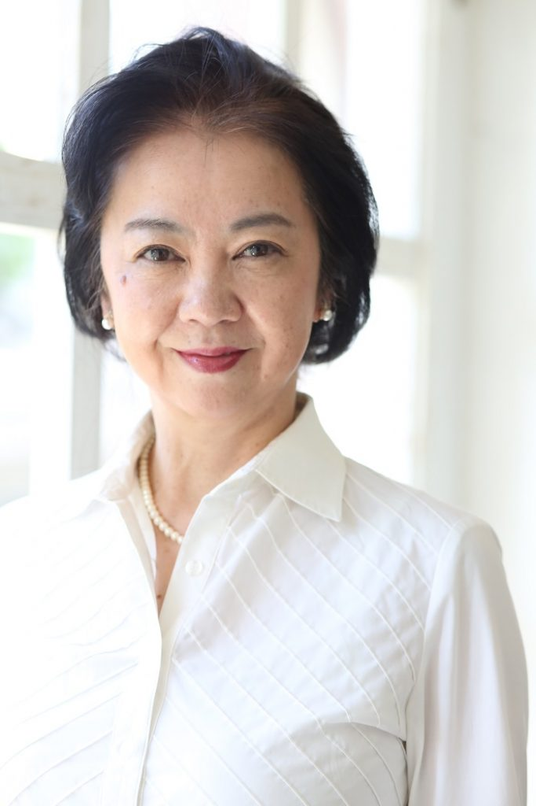

Hiromi Seta is a Japanese voice actress.
- Gender: Female
- Birthday: March 13, 1959
- Birthplace: Tokyo, Japan
- Hobbies: Tap Dancing and Modern Ballet

| |
Hiromi Seta is a Japanese voice actress.
|
 |
|---|
 |
Queen Victoria |
|
Queen Victoria is the queen of England. She is a kind and considerate person and a prestigious leader. Hiromi Seta voiced the older Queen. |